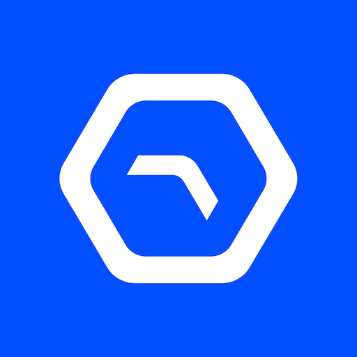

Uplink ✓ DeWi Market Avalanche L1
The Neutral Exchange for Global Wi-Fi Offload
What is Uplink? (The DeWi Clearinghouse)
Uplink is a massive Decentralized Wireless (DeWi) ecosystem designed to democratize global internet access. Built as a dedicated Layer 1 sub-network (subnet) on the Avalanche blockchain, it serves as the ultimate neutral clearinghouse and marketplace for the Wi-Fi industry.
Historically, if a major telecom company wanted to use third-party Wi-Fi routers to offload heavy 4G/5G traffic, they had to spend months negotiating closed, "bilateral agreements" with specific venue owners. Uplink completely replaces this legacy model. By leveraging OpenRoaming and blockchain smart contracts, it creates a multi-sided marketplace where demand (telecoms) automatically matches with supply (user-operated routers) in real-time, executing settlements dynamically.
Tier-1 Enterprise Partners & Funding
The sheer scale of building a global telecommunications clearinghouse requires massive institutional backing and legacy corporate partnerships:
| Total Capital Raised | $10 Million USD secured in a highly competitive Series A funding round. |
|---|---|
| Lead Venture Capitalists | Led prominently by Framework Ventures, with participation from Blockchange Ventures, Outlier Ventures, and NxGen. |
| Enterprise Collaborators | Uplink has secured strategic integrations with global legacy giants including Ericsson, Deutsche Telekom (T-Mobile), E.ON, and the Wireless Broadband Alliance (WBA). |
The Settlement Rail: Supply vs. Demand
Uplink operates as the neutral settlement rail connecting two distinct sides of the telecom industry:
📡 The Supply Side (You)
Venue operators, managed Wi-Fi providers, or individuals can transform idle Wi-Fi infrastructure into a monetized asset with near-zero operational overhead. You provide the actual internet connection.
🏢 The Demand Side (Telcos)
Mobile Network Operators (MNOs) and eSIM providers purchase access to your Wi-Fi to reduce their cellular CAPEX. They offload their indoor traffic to your verified network without having to build new 5G small cells.
⚡ 3-Step Automation
The entire marketplace workflow is automated into three steps: Connect, Discover, Settle. It takes networks from manual integration to live, paying traffic in days instead of months.
🤖 Automated Reconciliation
Every session is metered and settled automatically via blockchain smart contracts. Automated RADIUS accounting reconciliation completely eliminates manual spreadsheet disputes.
Tokenomics & The $ULX Ecosystem Token
The entire marketplace clearinghouse is powered and secured by the native ecosystem token:
🪙 The $ULX Token
The native token has a maximum hard cap of 1 Billion $ULX tokens. The official TGE (Token Generation Event) is targeted to roll out in tandem with the full Avalanche L1 mainnet deployment.
💰 Core Utilities
The token is strictly utilized for minting hardware, processing network transactions, node staking, and acting as the primary medium of exchange (Network Credits) for telecoms to consume global bandwidth.
Active Earning: The "No Hardware" Advantage
Unlike traditional DePIN projects (like Helium) that force you to buy expensive, proprietary mining rigs, Uplink utilizes a hardware-agnostic architecture:
🛡️ Earning as a Provider:
1. Existing Infrastructure: Uplink supports standard consumer-grade Wi-Fi routers, 5G setups, and LoRaWAN equipment. You do not need complex custom hardware. Uplink handles the Passpoint profile configuration and proxy setup natively via software ("No hardware changes").
2. Points & Rewards: Users act as "Providers" and accumulate points via the dashboard by sharing real internet connections, confirming router locations through the mobile app, and validating broader ecosystem network activities.
Total Crypto Network Pro Tips: Early Adoption
While the portal is undergoing scheduled maintenance and preparing for its mainnet transition, early positioning is critical:
💡 Maximizing Pre-Mainnet Points:
The upcoming $ULX airdrop eligibility is heavily driven by a Points-based campaign. As soon as the dashboard exits maintenance, ensure you have registered your account, linked your compatible router for pre-registration, and actively participated in any localized regional "Surge" connectivity events to maximize your multiplier before the TGE snapshot.
Complete Step-by-Step Setup Guides
Watch our complete video tutorials produced by Total Crypto Network. Follow the exact operational walkthrough for linking your existing consumer Wi-Fi router to the Uplink testnet marketplace: